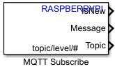

MQTT Subscribe
Receive messages from MQTT broker for specified topic
- Library:
Simulink Support Package for Raspberry Pi Hardware

Description
The MQTT Subscribe block receives messages from the Message Queuing Telemetry Transport (MQTT) broker for the specified topic.
The block has three output ports: IsNew, Message, and Topic. At each time step, the block checks if a new message is available on the specified topic. If a new message is available, the block receives the message. The Message port outputs the new message. If a new message is not available, Message outputs the last received message. The Topic port outputs the topic of the received message. The string topic/level/# on the block icon is specified by the Topic parameter.
For more information on MQTT, see Publish and Subscribe to MQTT Messages.
Note
The MQTT Subscribe block supports MQTT only over TCP/IP sockets.